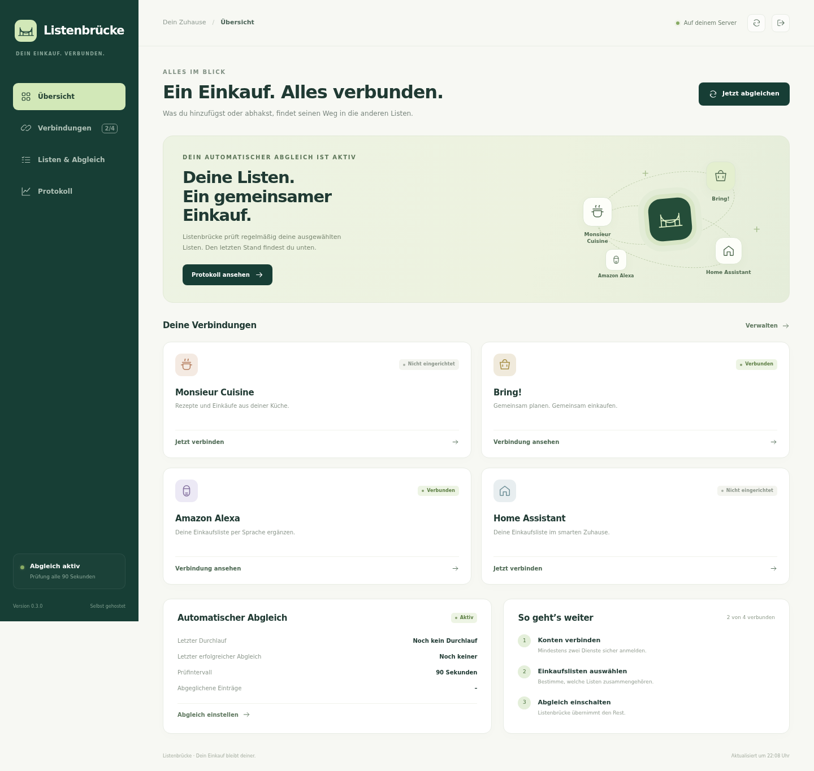

Monsieur CuisineAus deinem Rezept
Zwiebel1 Stück
Für die nächste Pasta
Das Rezept in Monsieur Cuisine. Der Einkauf in Bring!. Dein Zuruf an Alexa. Dein Zuhause in Home Assistant. Listenbrücke bringt sie zusammen – auf deinem eigenen Server.
Ein interaktives Beispiel. Keine Konten verbunden.
Du nutzt jede App dort, wo sie dir hilft. Listenbrücke kümmert sich im Hintergrund um den regelmäßigen Abgleich deiner ausgewählten Einkaufslisten.
Artikel als gekauft markieren oder wieder öffnen. Der Status wird beim nächsten Abgleich in die verbundenen Listen übernommen.
Freie Artikel mit Namen und Mengenangaben abgleichen. Unterschiedliche Mengen bleiben getrennt; Einheiten werden als Text erhalten.
Als Home-Assistant-App oder mit Docker betreiben. Konten, Einstellungen und der letzte Abgleich bleiben auf deiner Installation gespeichert.
Ein Intervall, das zu dir passt.Automatisch alle 30 bis 3600 Sekunden. Ein manueller Abgleich ist ebenfalls möglich.
Konflikte bleiben sichtbar.Widersprüchliche Änderungen erscheinen im Protokoll und lassen sich in deinen Listen klären.
Verbindungen prüfen. Listen auswählen. Den Abgleich verfolgen. Eine aufgeräumte deutsche Oberfläche führt dich durch die Einrichtung. Die native Home-Assistant-Integration ergänzt Statusentitäten, Steuerung und eine gemeinsame Einkaufsliste.

Zugangsdaten werden lokal verschlüsselt gespeichert. Du entscheidest, welche Listen verbunden sind und ob Löschungen weitergegeben werden.
Mehr zu Daten & SicherheitBei Lidl meldest du dich direkt im eigenen Browser an. Ein Browserhelfer übergibt das Anmeldeergebnis an deine Listenbrücke.
Löschungen werden standardmäßig nicht weitergegeben. Ein fehlgeschlagener Abruf wird niemals als leere Einkaufsliste behandelt.
Quellcode und Tests sind öffentlich. Version 0.3.0 ist experimentell; die Anbieter nutzen weiterhin ihre eigenen Cloud-Dienste.
Wähle Home Assistant mit Supervisor oder einen eigenen Docker-Host. Für den dauerhaften Betrieb wird diese Projektseite nicht benötigt.
Direkt in deiner Home-Assistant-Oberfläche öffnen. Die interne Verbindung wird vom Supervisor bereitgestellt.
Repository klonen, Container starten und die Oberfläche auf Port 8099 öffnen. Die Daten bleiben im Docker-Volume.
git clone https://github.com/xerx12/listenbruecke.git
cd listenbruecke
docker compose up --build -dDanach: Konten verbinden → Einkaufslisten auswählen → Abgleich einschalten.
Ein ehrlicher Blick auf Möglichkeiten, Voraussetzungen und Grenzen.
Frage oder Fehler meldenJa. Die zusätzliche HACS-Integration aus demselben Repository legt das Gerät Listenbrücke an. Dazu gehören eine gemeinsame Einkaufsliste, Anbieterstatus, letzter erfolgreicher Abgleich, ein Pausenschalter, das Prüfintervall und die Taste „Jetzt abgleichen“. Artikel lassen sich per Dashboard, Automation und nach Freigabe auch über Assist hinzufügen. Herstellerzugänge bleiben in der App.
Ja. Amazon Alexa ist direkt in Listenbrücke enthalten. Melde dich in der Oberfläche mit Amazon-E-Mail, Passwort und einem aktuellen Authenticator-Code an und wähle deine Alexa-Liste aus. Gespeichert wird nur die verschlüsselte Sitzung. Eine zusätzliche Alexa-Integration in Home Assistant ist dafür nicht nötig.
Freie Einkaufslisteneinträge lassen sich anlegen, ändern, abhaken und löschen. Bei Zutaten aus Rezepten wird ausschließlich der Erledigt-Status zurückgeschrieben. Namen, Mengen und einzelne Löschungen dieser Rezeptzutaten sind geschützt.
Eine zusätzliche lokale HA-Liste ist optional. Wenn du Bring! bereits in Home Assistant nutzt, ist das dieselbe Bring!-Liste. Listenbrücke bindet diesen Spiegel nicht noch einmal als getrennte Liste ein.
Listenbrücke läuft auf deinem Server. Die Verbindung zu Bring!, Monsieur Cuisine und Alexa benötigt weiterhin die Internet-Dienste der Anbieter. Es gibt keinen zusätzlichen Listenbrücke-Cloud-Dienst.
Version 0.3.0 ist experimentell. Die automatisierten Tests verwenden simulierte Anbieterantworten. Anmeldung und vollständiger Abgleich müssen zusätzlich mit deinen eigenen Konten geprüft werden. Änderungen an den inoffiziellen Schnittstellen können Anpassungen nötig machen.
Sichere immer das vollständige App-Datenverzeichnis mit Datenbank und Verschlüsselungsschlüssel. Der Schlüssel liegt bei den Daten; die Verschlüsselung schützt deshalb nicht vor Personen mit administrativem Zugriff auf das gesamte Volume.